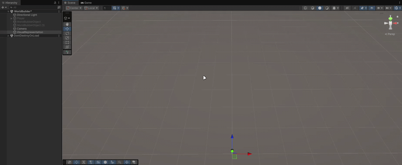
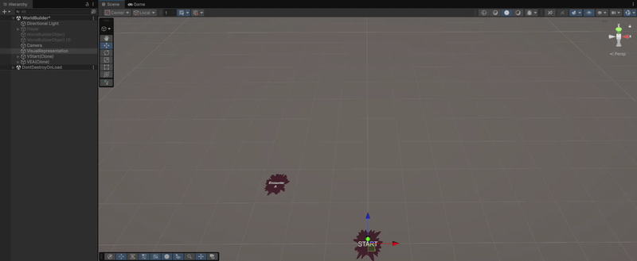

Minecraft
Minecraft uses noise-based terrain generation to create height variation, such as hills and valleys. Additional parameters determine biome distribution and the rules used to generate each biome.
GAME DEVELOPMENT · PROCEDURAL GENERATION · THESIS
An Investigation of Variables for Consistent Game Level Design Using Procedural Generation
How can procedural generation create worlds that feel familiar and distinctive, while still offering a different journey every time?
Explore the thesisTHE GENERATED WORLD
Example of a generated grassy world!.Figure 01 — Example of a generated floating-island environment.
To complete the YRGO Game Programmer programme, this thesis investigates how programmers can use procedural generation to create levels for players to explore.
The thesis work was conducted over eight weeks, from Monday 12 October to Friday 4 December 2026.
The research examines variables that help maintain recognisable characteristics across generated levels. The objective is to understand how a system can create a sense of familiarity for the player—as though they have visited an area before—while presenting a layout that is not exactly the same.
Exploration is an important part of many video games. A world that remains entirely static can reduce the sense of discovery and limit replayability. Once players memorise a level, they may begin to anticipate the outcome of particular encounters or situations.
Procedurally generated worlds that retain a consistent character can support replayability while preserving recognisable expectations about an environment. The intention is not to make every playthrough completely unfamiliar, but to provide variation within a set of identifiable rules and characteristics.
How do you develop a system that procedurally generates playable worlds while maintaining a certain character for that world?
During development, several supporting technical questions emerged:
Procedural generation can be used to construct maps and levels through a range of techniques. Different games demonstrate how algorithms, rules and authored content can be combined to achieve different design goals.
Minecraft uses noise-based terrain generation to create height variation, such as hills and valleys. Additional parameters determine biome distribution and the rules used to generate each biome.
The Binding of Isaac uses procedural generation to assemble dungeon rooms and connections for the player to explore.
Townscaper uses a technique known as Wave Function Collapse to generate arrangements of buildings and urban structures according to local adjacency rules.
Windblown, developed by Motion Twin, is the primary inspiration for the system investigated in this project. Its approach demonstrates how handcrafted content and procedural level assembly can coexist.
Closer examination of world generation in Windblown suggests that some environmental elements remain fixed. Starting areas, boss arenas and a number of larger islands retain consistent designs, whereas the paths connecting these locations vary between runs.
This approach places authored elements first and procedurally generates routes that connect them. It provides a useful foundation for this thesis: preserve locations that benefit from deliberate design, while allowing the connective structure to vary.
Environmental identity is communicated through visual presentation, but also through spatial organisation. For example, the factory environment uses ziplines to connect play areas positioned at substantially different heights along the Y-axis. The sanctuary environment, by contrast, is characterised by a more orthogonal layout, with relatively straight paths and 90-degree turns.
These differences suggest that level character can be expressed through the geometry and arrangement of paths, even when decorative graphics are removed. The structure of a level can therefore contribute to the player's recognition of a particular environment.
An interview with Yannick from Motion Twin provided additional insight into the procedural generation system used in Windblown. According to Yannick, the primary purpose of the system is to enable rapid variation in level design. This is particularly beneficial for smaller development teams, as it allows them to produce substantial environmental variation without manually constructing every aspect of the game world.
An important aspect of the system is the distinction between handcrafted and procedurally generated content. Interactive elements, such as islands, collision geometry, lava and enemies, are primarily handcrafted. This allows the developers to retain control over gameplay-critical elements while using procedural generation to introduce variation in the surrounding environment.
The generation process begins by establishing the overall shape of an island, after which noise is applied to modify its appearance. The intensity of the noise varies depending on the environment. For example, the factory environment uses less noise to achieve a more structured visual appearance. Other environmental elements are placed according to predefined rules that consider properties such as object size, surface accessibility and suitability for enemy navigation. These conditions help ensure that visual composition remains consistent with the underlying gameplay design.
Yannick also explained that the system has evolved throughout development. Earlier versions relied on predefined level sections, or chunks, appearing at specific points during a run. The current implementation is more dynamic, allowing the world to be assembled according to logical rules rather than a strictly predetermined sequence.
The underlying system is code-driven and organised around a hierarchy of nodes, where individual nodes can contain child nodes. These relationships allow developers to organise environmental elements and define how different components relate to one another. Rules determine which elements should be spawned, where they should be placed, and where optional content, such as secrets, can appear.
Rather than relying on splines to connect level sections, the system evaluates potential elements through a selection process. For each node, the program identifies eligible candidates and evaluates whether they satisfy the required conditions. These checks are performed across the generated map to prevent inappropriate reuse of the same level section. Additional conditions account for available space and the placement of secret areas. The overall world is generated dynamically, with the distance the player can travel using their dash ability also considered when determining the layout.
Finally, Yannick explained that ScriptableObjects are used to define and organise generation rules for individual worlds. This allows developers to configure parameters separately from the underlying implementation code.
The interview provides insight into the relationship between procedural generation and handcrafted level design. In particular, Windblown demonstrates how procedural systems can introduce environmental variation while retaining manual control over gameplay-critical elements. The distinction between handcrafted interactive content and procedurally placed environmental elements offers a practical example of a hybrid generation approach.
Furthermore, hierarchical nodes and rule-based candidate selection demonstrate how structured relationships and placement constraints can contribute to consistent procedural level generation. Considerations such as player movement capabilities, available space and object accessibility also highlight the importance of incorporating gameplay requirements into the generation process, rather than treating level generation as a purely geometric or visual task.
The development of the procedural floating-island generator provided practical experience in designing and implementing a system capable of constructing a navigable environment through procedural techniques. The system was designed so that the world could be assembled dynamically, allowing the resulting environment to vary between generations while retaining an underlying structure that supports player navigation.
One important architectural decision was to separate world generation from the individual components used to construct the environment. This was achieved through a World Generator responsible for coordinating the generation process and a World Rule configuration containing the parameters that determine how the world should be constructed. Separating generation logic from configuration makes the system easier to modify and expand. Properties such as island spacing and world layout can be adjusted without fundamentally changing the generation algorithm.
The generation process begins by establishing static elements of the environment. A starting platform and an ending platform are instantiated at predefined positions. These elements provide fixed reference points for the generated world. The space between them is populated with procedurally positioned platforms. This combines predefined structural elements with procedural variation, giving the environment a clear progression rather than relying entirely on randomly positioned objects.
Intermediate platforms are generated from a collection of predefined node objects. Each node represents a potential component of the world and can be instantiated at a position determined by the generation rules. The World Generator maintains references to spawned instances through a collection called spawnedNodes. Subsequent generation operations must work with the instantiated objects and their transforms, rather than the original prefab references. Development issues involving object references highlighted the importance of maintaining this distinction and ensuring that generated instances are correctly stored and accessible.
Platform positioning is influenced by parameters defined in the World Rule, including the distance between nodes. Randomisation prevents the world from following an entirely predictable layout. By varying the direction and position of successive platforms, the generator can create different spatial arrangements while retaining control over approximate distances. Random positioning must be calculated relative to the existing world structure; otherwise, platforms may overlap or become distributed in ways that compromise navigation.
A central component of the project is the use of Unity's Splines package to establish connections between generated platforms. Instead of placing islands at regular intervals and relying on their positions alone to define the layout, the system uses spline curves to describe the paths between them. This provides a flexible approach to constructing the environment and allows the connections themselves to introduce spatial variation.
The World Generator creates spline connections at runtime using the positions of generated platforms. The endpoints are represented by Bezier knots, which define the beginning and ending positions of the curve. Tangent handles influence the curvature and direction of the spline. By adjusting parameters such as tangent length and curve height, the generator can produce connections that are not limited to straight lines.
During development, it became apparent that connecting two endpoints alone provided insufficient control over the shape of a path. A spline with only two knots offers limited opportunities to influence its trajectory. This led to experimentation with intermediate knots and positional offsets. Variation in these points allows curves to deviate from a direct connection, producing more organic paths between islands. It also demonstrates that procedural variation can be applied not only to object placement, but also to the geometry that connects objects.
The spline represents the logical path rather than physical geometry. Additional geometry is therefore required to create a traversable connection. Individual platform tiles are distributed along the curve by sampling positions from the spline. This allows the tiles to follow its shape and form a continuous path between islands. Separating the logical representation of a path from its physical implementation makes it possible to modify the spline without manually repositioning every tile.
Several challenges encountered during development provided practical insight into procedural generation. One recurring issue concerned the relationship between object positioning, spacing and the physical dimensions of generated platforms. Calculating positions using a predefined distance does not necessarily guarantee correct placement. The dimensions and pivot points of instantiated prefabs also influence their final positions. Procedural positioning must therefore account for both mathematical coordinates and the physical properties of generated objects.
Another challenge involved the use of angles when calculating random directions. Unity's trigonometric functions operate using radians, whereas angles are often conceptualised in degrees during level design. Confusing these representations can produce unexpected positioning behaviour. Resolving this issue reinforced the importance of understanding the mathematical operations underlying procedural placement.
Developing spline connections also highlighted the importance of maintaining correct references between generated objects. The spline must use the positions of instantiated platforms rather than their original prefab references. Similarly, collections must be initialised before generated objects are added to them. Procedural systems introduce dependencies between objects and generation stages, making the organisation and management of references particularly important.
Finally, separating the generation process into individual methods made the system easier to develop and debug. Operations such as spawning static elements, generating intermediate platforms and constructing spline connections could be tested independently. This modular approach reduces complexity and makes it easier to identify errors as new functionality is introduced.
To address the research question of how procedural generation can maintain a distinct character and identity across generated levels, the larger problem was divided into several smaller components. Rather than treating the generation process as a single system, the project approached it as a collection of interconnected problems. Each component addresses a specific aspect of level generation while contributing to a coherent environment.
The central design objective was to establish a balance between procedural variation and intentional level design. Fully random generation can produce many unique configurations, but randomness alone does not necessarily result in interesting or coherent environments. Conversely, relying entirely on handcrafted content limits the amount of variation that can be achieved. The developed system therefore uses a hybrid approach, combining predefined level structures with procedural generation to introduce variation while preserving the intended characteristics of each world.
Three major tools were developed:
The ScriptableObject, named World Rule, acts as the central configuration system for the generation process. Rather than hardcoding generation parameters directly into individual scripts, the World Rule stores the values that determine how each world should be constructed. This separation allows the generation logic to remain independent of the visual and structural characteristics of a particular level.
The ScriptableObject contains parameters for several aspects of the generated environment:
These parameters form the foundation of each world's visual and structural identity. By changing values stored in the World Rule, the same generation system can produce environments with substantially different characteristics without requiring modifications to the underlying generation logic.
During the project, two distinct world characteristics were developed to demonstrate this principle. Although both environments use the same procedural generation framework, their different configurations produce noticeably different results. This demonstrates how procedural systems can support multiple visual identities through parameterisation rather than requiring separate implementations for each environment.
An advantage of this approach is its scalability. New world variations can be introduced by creating additional World Rule assets and adjusting their parameters. Designers can therefore experiment with different environmental characteristics while retaining a consistent underlying generation system.
The World Generator is responsible for constructing the overall structure of the environment. It handles node placement, generates the paths connecting nodes and determines the final positions of the individual tiles that make up the floating-island world.
By referencing values stored in the World Rule ScriptableObject, the generator determines how and where different elements should be placed. Since the system follows a hybrid procedural approach, handcrafted environmental chunks are given priority during the initial generation stage. These predefined elements establish important structural and visual landmarks before procedural generation begins.
The first node is always positioned at the world origin (0, 0, 0). Each subsequent node is positioned along an arc, with its direction determined by an angle between 30 and 150 degrees. This constraint ensures that the generated environment maintains a general forward progression along the Z-axis while allowing variation in the direction and arrangement of individual sections.
This approach provides control over the overall layout without requiring every node to have a predetermined position. It also limits unrestricted generation, which could otherwise result in layouts that are difficult to navigate or lack coherent progression.
Once the static nodes have been positioned, the World Generator connects them using splines. These splines define the paths along which individual tiles are placed. Their characteristics are determined by the World Rule, allowing connections to follow smoother curves or more irregular trajectories. Variation in intermediate spline points influences the curvature and direction of each connection.
Using splines instead of straight lines provides greater control over the shape of generated paths. Each connection can have its own trajectory while still following the overall structural rules of the world.
After the spline connections have been generated, tiles are distributed along their respective paths at calculated intervals. Spacing is determined by the radius of the tiles, with the intention of ensuring that neighbouring elements connect without unnecessary overlap or visible gaps. This is important for maintaining visual continuity, as inconsistencies between individual tiles could otherwise interrupt the appearance of a cohesive floating-island environment.
The World Generator therefore acts as the structural foundation of the system. It establishes the overall layout, determines how sections connect and ensures that the generated environment follows the constraints defined by the World Rule.
The Mesh Generator is responsible for introducing visual variation to the individual tiles that make up the environment.
Each tile has an attached Mesh Generator component that independently selects random values for a collection of generation parameters. These parameters control characteristics of the resulting geometry, with each having a predefined minimum and maximum value stored in the World Rule ScriptableObject.
By selecting values within these ranges, the Mesh Generator introduces controlled randomness into the construction of individual tiles. Two tiles can therefore share the same fundamental properties and visual style without having identical final geometry.
This approach reduces the repetitive appearance that can occur when the same modular elements are reused throughout a procedurally generated environment. Even relatively small geometric variations can contribute to a more organic result, particularly when multiple tiles are placed next to one another.
The randomness is constrained rather than unrestricted. Minimum and maximum values defined in the World Rule ensure that generated geometry remains within an intended visual range. This prevents individual tiles from deviating too far from the established art direction and helps maintain consistency across the environment.
The Mesh Generator operates on a smaller scale than the World Generator. While the World Generator determines the overall structure and layout, the Mesh Generator focuses on the visual characteristics of individual elements. Together, these systems introduce variation at both the macro and micro levels.
The three tools form an interconnected procedural generation framework, with each component contributing to a different aspect of the final environment. The World Rule establishes the parameters and constraints that define the intended characteristics of a world. The World Generator uses these parameters to construct the overall layout, position nodes, generate spline connections and distribute tiles. Finally, the Mesh Generator introduces controlled geometric variation to individual tiles, reducing repetition while maintaining a consistent visual identity.
Separating these responsibilities allows the structural layout, environmental characteristics and individual geometry to be adjusted independently. Rather than relying on randomness alone to create interesting environments, the system uses predefined rules and constraints to establish a recognisable identity, while allowing procedural variation to make each generated instance different.
The result is a hybrid procedural generation system that demonstrates how a collection of reusable tools can produce multiple distinct environmental characteristics without requiring entirely separate generation pipelines.


Although the result addresses the research question, the developed system has several limitations and opportunities for further development. The generation framework demonstrates that a shared set of tools can produce different environmental characteristics through configurable parameters. However, the current implementation represents only an initial exploration of how these principles could be expanded into a more complex level-generation system.
One limitation is that the generated worlds are relatively linear and chronological. The current structure guides the player from one node to the next, without creating branches that could lead to optional areas, side quests or additional rewards. Introducing branching paths would provide greater player agency and could increase the variety of possible routes through the environment.
Furthermore, the current system uses all available nodes during generation. A possible improvement would be to expand the selection of handcrafted nodes and allow the generator to choose between them. Selected nodes could be marked as used to prevent unwanted repetition within the same playthrough. This would increase the number of possible combinations while retaining the deliberate design of the authored sections.
Further work could also investigate more advanced rules for evaluating candidate nodes, available space and route accessibility. Such constraints could help the generator create optional paths while ensuring that all generated layouts remain navigable and consistent with the intended character of each world.
Overall, the project demonstrates that level character does not need to be sacrificed in order to achieve procedural variation. By defining parameters and constraints that govern both the macro-level layout and the micro-level geometry, a procedural system can produce different environments that still share a recognisable identity. The next development step would be to extend the system's structural possibilities while preserving this balance between authored design and procedural variation.